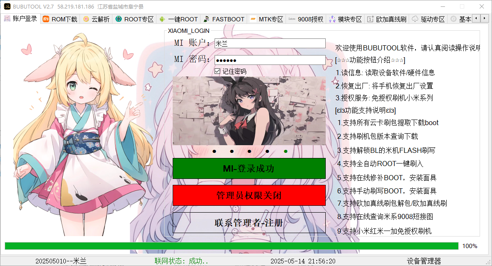

BUBUTOOL提供全方位的手机管理功能，满足您的各种需求
快速准确地读取设备的软件和硬件信息，包括CPU、内存、存储等详细参数，方便用户全面了解设备状态。
安全、便捷地将手机一键恢复到出厂设置，彻底清除所有个人数据和设置，解决设备使用中的各种问题。
支持小米系列手机免授权刷机，简化刷机流程，提供多种ROM选择，让您轻松体验不同系统版本。
提供安全可靠的ROOT权限获取和管理功能，让您可以自由控制手机权限，卸载预装软件，优化系统性能。
智能分析电池使用情况，识别耗电大户，提供电池优化建议，延长手机续航时间，提升使用体验。
深度扫描手机存储空间，识别并清理无用文件、缓存数据和残留文件，释放更多存储空间，让手机运行更流畅。
选择适合您的版本，开启手机管理新体验
适用于 Windows 10/11
版本号
v2.7
解答您在使用 BUBUTOOL 过程中可能遇到的问题